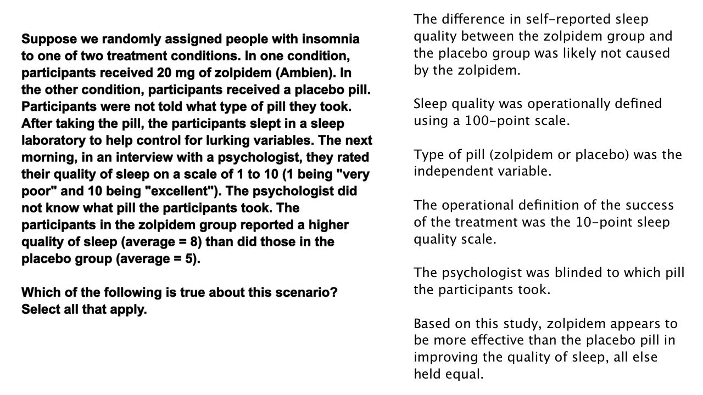

22. 38. 失眠
- 失眠
Start Quiz:

INSTRUCTOR NOTE:
假设我们将患有失眠症的人随机分配到两个治疗方法中。在一个方法中，被试获得 20 毫克唑吡旦（安比恩）。在另一种方法中，被试获得了一个安慰剂药片。被试不知道他们服用的是哪种类型的药片。服药后，被试在睡眠实验室入睡以帮助控制潜在变量。第二天早上，在与心理学家的对话中，他们对自己的睡眠质量进行了从 1 到 10 的评分（1 表示“非常差”，10 表示“非常好”）。心理学家同样不知道他们各自服用了哪种药物。唑吡旦组的被试报告的睡眠质量（均值 = 8）优于安慰剂组（均值 = 5）。
关于这个情景以下哪个说法是正确的？选择所有适用项。
- □ 唑吡旦组与安慰剂组报告的睡眠质量之间的差异，可能不是由唑吡旦引起的。
- □ 睡眠质量的操作定义使用一个满分为100分的度量表。
- □ 药丸类型（唑吡旦或安慰剂）是自变量。
- □ 治疗成果的操作定义使用一个满分为10分的度量表。
- □ 心理学家不知道被试服用的是那种药丸。
- □ 这项研究表明，在其他条件相同的情况下，唑吡旦比安慰剂更能改善睡眠质量。